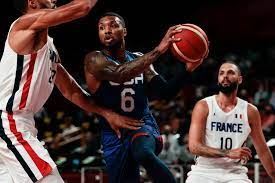
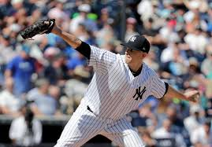
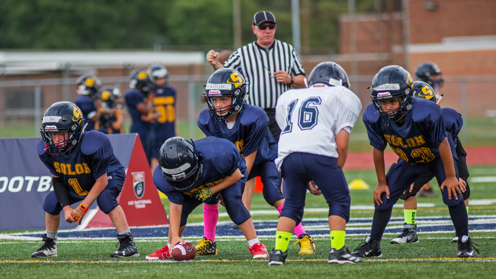
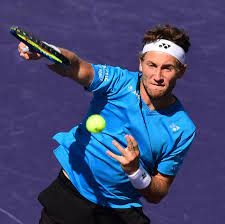

Basketball
The only major sport strictly of U.S. origin, basketball was invented by James Naismith (1861–1939) on or about December 1, 1891, at the International Young Men’s Christian Association (YMCA) Training School (now Springfield College), Springfield, Massachusetts, where Naismith was an instructor in physical education.
For that first game of basketball in 1891, Naismith used as goals two half-bushel peach baskets, which gave the sport its name.The students were enthusiastic.After much running and shooting, William R. Chase made a midcourt shot—the only score in that historic contest. Word spread about the newly invented game, and numerous associations wrote Naismith for a copy of the rules, which were published in the January 15, 1892.

While basketball is competitively a winter sport, it is played on a 12-month basis—on summer playgrounds, in municipal, industrial, and church halls.
- Basketball was first played with a soccer ball.
- It was a hard sport because the rules were different back then.
- Dribbling the ball was prohibited.
- The three-pointer was not always included while playing.
Baseball
Baseball is game that is played with a bat,a ball, and gloves and it is between two teams including nine players each on a field with four white bases laid out in a diamond
It was nationalistic sentiment that helped to make baseball “America’s game.” In the quest to obtain greater cultural autonomy, Americans yearned for a sport they could claim as exclusively their own.
Football
Football which is also called association football or soccer, it's a game in which two teams of 11 players, using any bodily part except for their arms and hands to try move the ball to the opposing team's goal, where the goal keeper is allowed to pick the ball with his hand
Tennis
Tennis is a sport whic includes a racket which can be played individually against another individual person. It is an Olympic sport that can played at all levels of society and at all ages
- Before tennis players used rackets, people would use the palm of their hands to hit the ball back and forth over the net.
- Before yellow tennis balls, they were white.
- The origin of the tennis term “love” is unknown.
- During a match, a player on average runs 3 miles.
Another tennis dynamic duo is Elite Sports Clubs’ tennis pros, Jeff and Jordan Aranda. Jeff and Jordan will be taking over as co-directors of tennis at Elite Sports Club – River Glen. They will be filling Wally Bronson’s role — who recently retired with over 50 years in the sport.
In General
| Basketball | Baseball | Football | Tennis |
|---|---|---|---|
| 2 opposing teams of five players strive to put a ball through a hoop | strike a ball so that one of a nine-person team can run counter-clockwise among four bases, resulting in the scoring of a run | two teams of eleven players contend to get a round ball into their opponent's goal | played by two players (or four in doubles), who alternately strike the ball over a net using racquets |
| Can be a great social sport | Gives a big boost for hand-eye coordination | Improves blood pressure and heart health | Increases aerobic capacities |
| Builds endurance | Receive Vitamin D from sunlight | Buildds speed and stamina | Improves muscle tone |
| Develops self-discipline and concetration | Quicken making decisions | Increases bone strength in inactive people | Ameliorate metabolic function |